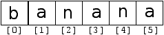

6.1 A string is a sequence
A string is a sequence of characters.
You can access the characters one at a time with the
bracket operator:
>>> fruit = 'banana'
>>> letter = fruit[1]
The second statement extracts the character at index position 1 from the
fruit variable and assigns it to letter variable.
The expression in brackets is called an index.
The index indicates which character in the sequence you
want (hence the name).
But you might not get what you expect:
>>> print letter
a
For most people, the first letter of 'banana' is b, not
a. But in Python, the index is an offset from the
beginning of the string, and the offset of the first letter is zero.
>>> letter = fruit[0]
>>> print letter
b
So b is the 0th letter ("zero-eth") of 'banana', a
is the 1th letter ("one-eth"), and n is the 2th ("two-eth")
letter.

You can use any expression, including variables and operators, as an
index, but the value of the index has to be an integer. Otherwise you
get:
>>> letter = fruit[1.5]
TypeError: string indices must be integers
6.2 Getting the length of a string using len
len is a built-in function that returns the number of characters
in a string:
>>> fruit = 'banana'
>>> len(fruit)
6
To get the last letter of a string, you might be tempted to try something
like this:
>>> length = len(fruit)
>>> last = fruit[length]
IndexError: string index out of range
The reason for the IndexError is that there is no letter in 'banana' with the index 6. Since we started counting at zero, the
six letters are numbered 0 to 5. To get the last character, you have
to subtract 1 from length:
>>> last = fruit[length-1]
>>> print last
a
Alternatively, you can use negative indices, which count backward from
the end of the string. The expression fruit[-1] yields the last
letter, fruit[-2] yields the second to last, and so on.
6.3 Traversal through a string with a loop
A lot of computations involve processing a string one character at a
time. Often they start at the beginning, select each character in
turn, do something to it, and continue until the end. This pattern of
processing is called a traversal. One way to write a traversal
is with a while loop:
index = 0
while index < len(fruit):
letter = fruit[index]
print letter
index = index + 1
This loop traverses the string and displays each letter on a line by
itself. The loop condition is index < len(fruit), so
when index is equal to the length of the string, the
condition is false, and the body of the loop is not executed. The
last character accessed is the one with the index len(fruit)-1,
which is the last character in the string.
Exercise 1
Write a while loop that starts at the last character in the string
and works its way backwards to the first character in the string,
printing each letter on a separate line, except backwards.
Another way to write a traversal is with a for loop:
for char in fruit:
print char
Each time through the loop, the next character in the string is assigned
to the variable char. The loop continues until no characters are
left.
6.4 String slices
A segment of a string is called a slice. Selecting a slice is
similar to selecting a character:
>>> s = 'Monty Python'
>>> print s[0:5]
Monty
>>> print s[6:13]
Python
The operator [n:m] returns the part of the string from the
"n-eth" character to the "m-eth" character, including the first but
excluding the last.
If you omit the first index (before the colon), the slice starts at
the beginning of the string. If you omit the second index, the slice
goes to the end of the string:
>>> fruit = 'banana'
>>> fruit[:3]
'ban'
>>> fruit[3:]
'ana'
If the first index is greater than or equal to the second the result
is an empty string, represented by two quotation marks:
>>> fruit = 'banana'
>>> fruit[3:3]
"
An empty string contains no characters and has length 0, but other
than that, it is the same as any other string.
Exercise 2
Given that fruit is a string, what does
fruit[:] mean?
6.5 Strings are immutable
It is tempting to use the [] operator on the left side of an
assignment, with the intention of changing a character in a string.
For example:
>>> greeting = 'Hello, world!'
>>> greeting[0] = 'J'
TypeError: object does not support item assignment
The "object" in this case is the string and the "item" is
the character you tried to assign. For now, an object is
the same thing as a value, but we will refine that definition
later. An item is one of the values in a sequence.
The reason for the error is that
strings are immutable, which means you can't change an
existing string. The best you can do is create a new string
that is a variation on the original:
>>> greeting = 'Hello, world!'
>>> new_greeting = 'J' + greeting[1:]
>>> print new_greeting
Jello, world!
This example concatenates a new first letter onto
a slice of greeting. It has no effect on
the original string.
6.6 Looping and counting
The following program counts the number of times the letter a
appears in a string:
word = 'banana'
count = 0
for letter in word:
if letter == 'a':
count = count + 1
print count
This program demonstrates another pattern of computation called a counter. The variable count is initialized to 0 and then
incremented each time an a is found.
When the loop exits, count
contains the result---the total number of a's.
Exercise 3
Encapsulate this code in a function named count, and generalize it so that it accepts the string and the
letter as arguments.
6.7 The in operator
The word in is a boolean operator that takes two strings and
returns True if the first appears as a substring in the second:
>>> 'a' in 'banana'
True
>>> 'seed' in 'banana'
False
6.8 String comparison
The comparison operators work on strings. To see if two strings are equal:
if word == 'banana':
print 'All right, bananas.'
Other comparison operations are useful for putting words in alphabetical
order:
if word < 'banana':
print 'Your word,' + word + ', comes before banana.'
elif word > 'banana':
print 'Your word,' + word + ', comes after banana.'
else:
print 'All right, bananas.'
Python does not handle uppercase and lowercase letters the same way
that people do. All the uppercase letters come before all the
lowercase letters, so:
Your word, Pineapple, comes before banana.
A common way to address this problem is to convert strings to a
standard format, such as all lowercase, before performing the
comparison. Keep that in mind in case you have to defend yourself
against a man armed with a Pineapple.
6.9 string methods
Strings are an example of Python objects. An object contains
both data (the actual string itself) as well as methods, which
are effectively functions which that are built into the object and
are available to any instance of the object.
Python has a function called dir that lists the methods available
for an object. The type function shows the type of an object
and the dir function shows the available methods.
>>> stuff = 'Hello world'
>>> type(stuff)
<type 'str'>
>>> dir(stuff)
['capitalize', 'center', 'count', 'decode', 'encode',
'endswith', 'expandtabs', 'find', 'format', 'index',
'isalnum', 'isalpha', 'isdigit', 'islower', 'isspace',
'istitle', 'isupper', 'join', 'ljust', 'lower', 'lstrip',
'partition', 'replace', 'rfind', 'rindex', 'rjust',
'rpartition', 'rsplit', 'rstrip', 'split', 'splitlines',
'startswith', 'strip', 'swapcase', 'title', 'translate',
'upper', 'zfill']
>>> help(str.capitalize)
Help on method_descriptor:
capitalize(...)
S.capitalize() -> string
Return a copy of the string S with only its first character
capitalized.
>>>
While the dir function lists the methods, and you
can use help to get some simple documentation on a method,
a better source of documentation for string methods would be
docs.python.org/library/string.html.
Calling a method is similar to calling a function---it
takes arguments and
returns a value---but the syntax is different. We call a method
by appending the method name to the variable name using the period
as a delimiter.
For example, the
method upper takes a string and returns a new string with
all uppercase letters:
Instead of the function syntax upper(word), it uses
the method syntax word.upper().
>>> word = 'banana'
>>> new_word = word.upper()
>>> print new_word
BANANA
This form of dot notation specifies the name of the method, upper, and the name of the string to apply the method to, word. The empty parentheses indicate that this method takes no
argument.
A method call is called an invocation; in this case, we would
say that we are invoking upper on the word.
As it turns out, there is a string method named find that
is remarkably similar to the function we wrote:
>>> word = 'banana'
>>> index = word.find('a')
>>> print index
1
In this example, we invoke find on word and pass
the letter we are looking for as a parameter.
Actually, the find method is more general than our function;
it can find substrings, not just characters:
>>> word.find('na')
2
It can take as a second argument the index where it should start:
>>> word.find('na', 3)
4
One common task is to remove white space (spaces, tabs, or newlines) from
the beginning and end of a string using the strip method:
>>> line = ' Here we go '
>>> line.strip()
'Here we go'
Some methods such as startswith return boolean values.
>>> line = 'Please have a nice day'
>>> line.startswith('Please')
True
>>> line.startswith('p')
False
You will note that startswith requires case to match so sometimes
we take a line and map it all to lowercase before we do any checking
using the lower method.
>>> line = 'Please have a nice day'
>>> line.startswith('p')
False
>>> line.lower()
'please have a nice day'
>>> line.lower().startswith('p')
True
In the last example, the method lower is called
and then we use startswith
to check to see if the resulting lowercase string
starts with the letter "p". As long as we are careful
with the order, we can make multiple method calls in a
single expression.
Exercise 4
There is a string method called count that is similar
to the function in the previous exercise. Read the documentation
of this method at
docs.python.org/library/string.html
and write an invocation that counts the number of times the
letter a occurs
in 'banana'.
6.10 Parsing strings
Often, we want to look into a string and find a substring. For example
if we were presented a series of lines formatted as follows:
From stephen.marquard@ uct.ac.za Sat Jan 5 09:14:16 2008
And we wanted to pull out only the second half of the address (i.e.
uct.ac.za) from each line. We can do this by using the find
method and string slicing.
First, we will find the position of the at-sign in the string. Then we will
find the position of the first space after the at-sign. And then we
will use string slicing to extract the portion of the string which we
are looking for.
>>> data = 'From stephen.marquard@uct.ac.za Sat Jan 5 09:14:16 2008'
>>> atpos = data.find('@')
>>> print atpos
21
>>> sppos = data.find(' ',atpos)
>>> print sppos
31
>>> host = data[atpos+1:sppos]
>>> print host
uct.ac.za
>>>
We use a version of the find method which allows us to specify
a position in the string where we want find to start looking.
When we slice, we extract the characters
from "one beyond the at-sign through up to but not including the
space character".
The documentation for the find method is available at
docs.python.org/library/string.html.
6.11 Format operator
The format operator, %
allows us to construct strings, replacing parts of the strings
with the data stored in variables.
When applied to integers, % is the modulus operator. But
when the first operand is a string, % is the format operator.
The first operand is the format string, which contains
one or more format sequences that
specify how
the second operand is formatted. The result is a string.
For example, the format sequence '%d' means that
the second operand should be formatted as an
integer (d stands for "decimal"):
>>> camels = 42
>>> '%d' % camels
'42'
The result is the string '42', which is not to be confused
with the integer value 42.
A format sequence can appear anywhere in the string,
so you can embed a value in a sentence:
>>> camels = 42
>>> 'I have spotted %d camels.' % camels
'I have spotted 42 camels.'
If there is more than one format sequence in the string,
the second argument has to be a tuple. Each format sequence is
matched with an element of the tuple, in order.
The following example uses '%d' to format an integer,
'%g' to format
a floating-point number (don't ask why), and '%s' to format
a string:
>>> 'In %d years I have spotted %g %s.' % (3, 0.1, 'camels')
'In 3 years I have spotted 0.1 camels.'
The number of elements in the tuple has to match the number
of format sequences in the string. Also, the types of the
elements have to match the format sequences:
>>> '%d %d %d' % (1, 2)
TypeError: not enough arguments for format string
>>> '%d' % 'dollars'
TypeError: illegal argument type for built-in operation
In the first example, there aren't enough elements; in the
second, the element is the wrong type.
The format operator is powerful, but it can be difficult to use. You
can read more about it at
docs.python.org/lib/typesseq-strings.html.
6.12 Debugging
A skill that you should cultivate as you program is always
asking yourself, "What could go wrong here?" or alternatively,
"What crazy thing might our user do to crash our (seemingly)
perfect program?".
For example, look at the program which we used to demonstrate
the while loop in the chapter on iteration:
while True:
line = raw_input('> ')
if line[0] == '#' :
continue
if line == 'done':
break
print line
print 'Done!'
Look what happens when the user enters an empty line of input:
> hello there
hello there
> # don't print this
> print this!
print this!
>
Traceback (most recent call last):
File "copytildone.py", line 3, in <module>
if line[0] == '#' :
The code works fine until it is presented an empty line. Then
there is no zeroth character so we get a traceback. There are two
solutions to this to make line three "safe" even if the line is
empty.
One possibility is to simply use the startswith method
which returns False if the string is empty.
if line.startswith('#') :
Another way to safely write the if statement using the guardian
pattern and make sure the second logical expression is evaluated
only where there is at least one character in the string.:
if len(line) > 0 and line[0] == '#' :
6.13 Glossary
- counter:
- A variable used to count something, usually initialized
to zero and then incremented.
- empty string:
- A string with no characters and length 0, represented
by two quotation marks.
- format operator:
- An operator, %, that takes a format
string and a tuple and generates a string that includes
the elements of the tuple formatted as specified by the format string.
- format sequence:
- A sequence of characters in a format string,
like %d, that specifies how a value should be formatted.
- format string:
- A string, used with the format operator, that
contains format sequences.
- flag:
- A boolean variable used to indicate whether a condition
is true.
- invocation:
- A statement that calls a method.
- immutable:
- The property of a sequence whose items cannot
be assigned.
- index:
- An integer value used to select an item in
a sequence, such as a character in a string.
- item:
- One of the values in a sequence.
- method:
- A function that is associated with an object and called
using dot notation.
- object:
- Something a variable can refer to. For now,
you can use "object" and "value" interchangeably.
- search:
- A pattern of traversal that stops
when it finds what it is looking for.
- sequence:
- An ordered set; that is, a set of
values where each value is identified by an integer index.
- slice:
- A part of a string specified by a range of indices.
- traverse:
- To iterate through the items in a sequence,
performing a similar operation on each.
6.14 Exercises
Exercise 5
Take the following Python code that stores a string:`
str = 'X-DSPAM-Confidence: 0.8475'
Use find and string slicing to extract the portion
of the string after the colon character and then use the
float function to convert the extracted string
into a floating point number.
Exercise 6
Read the documentation of the string methods at
docs.python.org/lib/string-methods.html. You
might want to experiment with some of them to make sure
you understand how they work. strip and
replace are particularly useful.
The documentation uses a syntax that might be confusing.
For example, in find(sub[, start[, end]]), the brackets
indicate optional arguments. So sub is required, but
start is optional, and if you include start,
then end is optional.